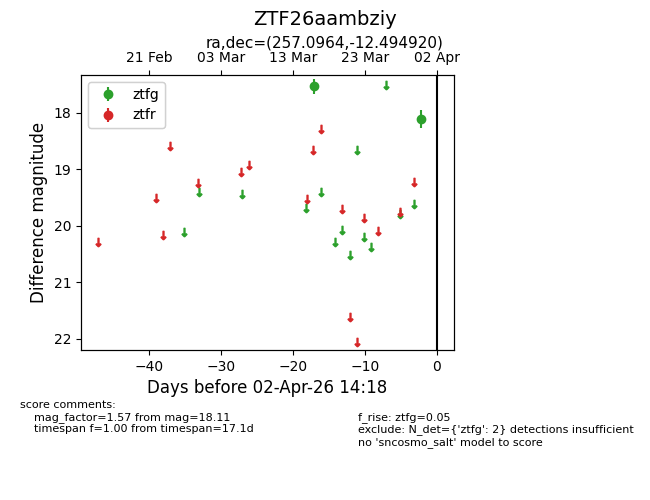
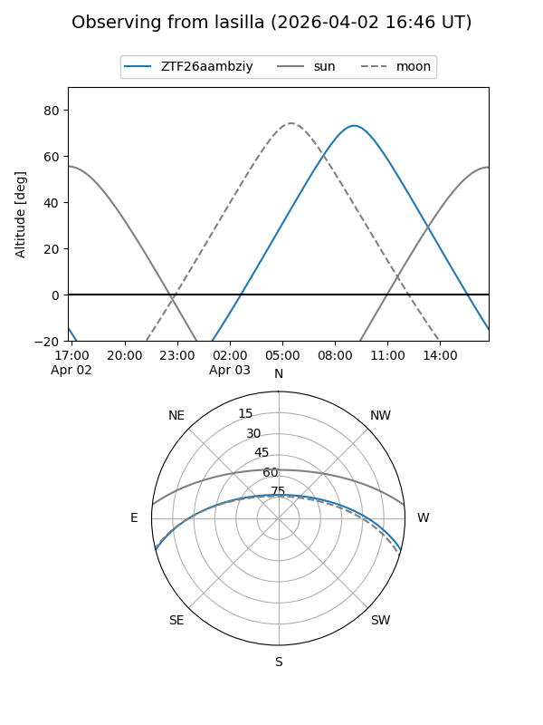
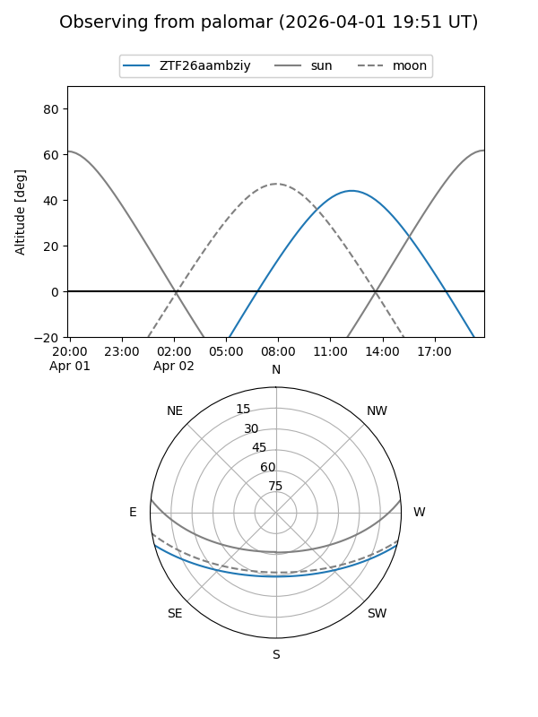

ZTF26aambziy
Target ZTF26aambziy at 2026-04-02 14:24
Aliases and brokers:
FINK: link
Lasair: link
ALeRCE: link
alt names
ZTF26aambziy (ztf,fink_ztf)
Coordinates:
equatorial (ra, dec) = 257.0964,-12.49492
equatorial (HMS+DMS) = 17:08:23.13,-12:29:41.71
galactic (l, b) = (9.2276,+16.20166)
Flags:
Photometry:
last ztfg=18.11
2 ztfg detections
Lightcurve

Visibility


Additional plots